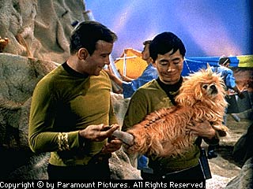

Jeri Ryan portrays Seven of Nine, a human who was assimilated by the Borg. When Captain Janeway severs Seven of Nine's link to the Borg Collective,
she is forced to remain on the U.S.S. Voyager and adapt to human society. Now, as a crew member of the U.S.S. Voyager, she must try to conform to Starfleet rules and regulations.
"Seven of Nine is confused by the complexities of human interaction," Ryan explains. "Torn between her past as a Borg and her future as a human, Janeway plays an integral role
in helping Seven of Nine adapt to her new reality." Ryan, a self-admitted Army brat, grew up near bases ranging from Germany to Hawaii. She was born in Munich, Germany and after
re-locating to bases in Kansas, Maryland, Georgia and Texas, her family settled down in Paduch, Kentucky when she was 11. After graduating from Northwestern University in Chicago
as a National Merit Scholar with a B.S. in theater, she came to Los Angeles. As a former series regular on NBC's Dark Skies, Ryan is no stranger to the world of science fiction.
She portrayed Juliet, a mysterious government agent who helped in a secret program against hostile extraterrestrials. Prior to landing that role, she guest-starred on several
television series including Matlock, Who's the Boss?, Murder, She Wrote, Reasonable Doubts and Diagnosis Murder.
>
George Takei as Sulu
George Takei
George Takei played Hikaru Sulu, the helm officer aboard the U.S.S. Enterprise on the original Star Trek series. Takei was born in the Boyle Heights district of Los Angeles.
He and his family lived there until World War II when, after the attack on Pearl Harbor, they were relocated to a detention camp in Arkansas. From there, they were again moved to
another camp at Tule Lake in Northern California. Takei went to college with thoughts of being an architect, but soon changed his major to Theater Arts. He graduated in 1960 with a
Bachelor of Arts degree, his minor was Latin American Studies. Takei made his acting debut in a "Playhouse 90" production when he was attending UCLA. While he was taking classes,
Takei also trained at the Desilu Workshop. After a biking trip across Europe, George returned to California and began guest starring on series such as Perry Mason, Mr. Novak,
Hawaiian Eye, I, Spy, It Takes a Thief and My Three Sons. Takei appearred in one Twilight Zone episode ("The Encounter"). It was aired once, but due to its controversial content
regarding a Japanese traitor in WW II, it has never been shown again